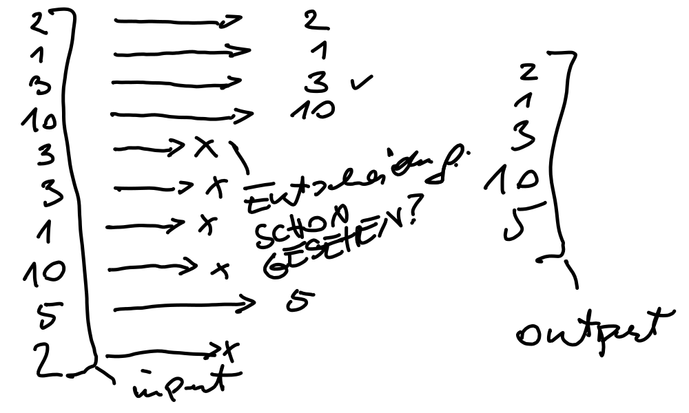

Python Basics (2021-11-17 - 2021-11-19)¶
Day 1¶
-
import sys # print('argv:', sys.argv) lhs = sys.argv[1] rhs = sys.argv[2] # hier geschieht ein wunder: welche ist groesser? lhs oder rhs? print('0:', sys.argv[0]) # prog name print('1:', sys.argv[1]) # param #1 print('2:', sys.argv[2]) # param #2
-
Explaining how Python integers work (they don’t overflow), we came up with an overflow demo in C.
#include <stdio.h> int main(void) { unsigned int i = 0xffffffff; i += 1; printf("%d\n", i); /* will print 0!!! */ return 0; } Exercise: Determine Maximum of Two Numbers
import sys a = int(sys.argv[1]) b = int(sys.argv[2]) if a < b: print(b) else: print(a)
Day 2¶
-
whileandforin C (similar in Jave and C#):foris just a shorthand forwhile- as opposed to Python.#include <stdio.h> int main(void) { int i = 0; int s = 0; while (i <= 10) { s += i; i += 1; } printf("sum (while): %d\n", s); s = 0; for (i = 0; i <= 10; i++) s += i; printf("sum (for): %d\n", s); return 0; }
-

lin = [2,1,3,10,3,3,1,10,5,2] lout = [] have = set() # maintained in parallel to answer the "schon gesehen?" # question faster for element in lin: if element not in have: lout.append(element) have.add(element) print('outputliste:', lout) print('have:', have)
-
Solution 1: relatively explicit and long
import sys import pprint filename = sys.argv[1] username = sys.argv[2] userdatabase = {} f = open(filename) for line in f: line = line.rstrip() # remove linefeed at end of line fields = line.split(':') username = fields[0] password = fields[1] userid = int(fields[2]) groupid = int(fields[3]) description = fields[4] home = fields[5] loginshell = fields[6] userrecord = {} userrecord['username'] = username userrecord['password'] = password userrecord['userid'] = userid userrecord['groupid'] = groupid userrecord['description'] = description userrecord['home'] = home userrecord['loginshell'] = loginshell # pprint.pprint(userrecord, indent=4) userdatabase[username] = userrecord #pprint.pprint(userdatabase, indent=4) pprint.pprint(userdatabase[username])
Solution 2: dense, short, requires a bit of programming pratice (not much though)
import sys import pprint filename = sys.argv[1] username = sys.argv[2] userdatabase = {} f = open(filename) for line in f: username, password, userid, groupid, description, home, loginshell = line.rstrip().split(':') userdatabase[username] = { 'username': username, 'password': password, 'userid': userid, 'groupid': groupid, 'description': description, 'home': home, 'loginshell': loginshell, } pprint.pprint(userdatabase[username])
{kind=link}
Day 3¶
Back to Exercise: Function: uniq():
setusage for speed!Fibonacci Numbers: 1, 1, 2, 3, 5, 8, 13, …
def fibo(): ''' Generate the *infinite* fibonacci sequence. Note that we use the ``yield`` statement and not ``return`` - this makes this a *generator* which is fundamentally different from a *function*. ''' first = second = 1 yield first yield second while True: next = first + second yield next first, second = second, next if __name__ == '__main__': # started as program, and not imported nums = fibo() for i in nums: print(i)
Iterable and
dict,list. See notebook.Comprehensions. See notebook.
-
The module
stock.py:import csv import datetime # note: functions prefixed with '_' are not imported when someone says # "from there import *". those functions are internal to this module, # so it is good practice to hide them in such a way. def _fix_float_number(record, fieldname): old = record[fieldname] old = old.replace(',', '.') new = float(old) record[fieldname] = new def _fix_bool(record, fieldname): old = record[fieldname] if old == 'T': new = True elif old == 'F': new = False else: new = True record[fieldname] = new def _fix_date(record, fieldname): old = record[fieldname] new = datetime.datetime.strptime(old, '%Y%m%d') record[fieldname] = new def read_stock(filename): csvfile = open(filename) rdr = csv.DictReader(csvfile, delimiter=';') converted_records = [] for record in rdr: _fix_date(record, 'AS_OF_DATE') _fix_bool(record, 'FUND_IN_UNIVERSE') _fix_bool(record, 'FUND_OF_FUNDS') _fix_float_number(record, 'FUND_HOLDINGS_COUNT') _fix_float_number(record, 'FUND_HOLDING_FUNDS_COUNT') converted_records.append(record) return converted_records
The program
read-stock.py:import stock import sys from pprint import pprint for record in stock.read_stock(sys.argv[1]): pprint(record)
Exercise: Read CSV File, Write into Sqlite3 Database
The program
stock-to-db.py:import stock import sys import sqlite3 csvname = sys.argv[1] dbname = sys.argv[2] db = sqlite3.connect(dbname) for record in stock.read_stock(csvname): stmt = f''' insert into records values ( "{record['FUND_ISIN']}", "{record['FUND_NAME']}", "{record['FUND_TICKER']}" ); ''' db.execute(stmt) db.commit()
Jupyter Notebook¶
PCAP Exam Syllabus¶
Exam block #1: Modules and Packages (12%)
Objectives covered by the block (6 items)
import variants; advanced qualifiying for nested modules
Comment:
os.pathdir(); sys.path variable
math: ceil(), floor(), trunc(), factorial(), hypot(), sqrt(); random: random(), seed(), choice(), sample()
platform: platform(), machine(), processor(), system(), version(), python_implementation(), python_version_tuple()
idea, __pycache__, __name__, public variables, __init__.py
searching for modules/packages; nested packages vs directory tree
Exam block #2: Exceptions (14%)
Objectives covered by the block (5 items)
except, except:-except; except:-else:, except (e1,e2)
the hierarchy of exceptions
raise, raise ex, assert
event classes, except E as e, arg property
self-defined exceptions, defining and using
Exam block #3: Strings (18%)
Objectives covered by the block (8 items)
ASCII, UNICODE, UTF-8, codepoints, escape sequences
ord(), chr(), literals
indexing, slicing, immutability
iterating through,
concatenating, multiplying, comparing (against strings and numbers)
in, not in
.isxxx(), .join(), .split()
.sort(), sorted(), .index(), .find(), .rfind()
Exam block #4: Object-Oriented Programming (34%)
Objectives covered by the block (12 items)
ideas: class, object, property, method, encapsulation, inheritance, grammar vs class, superclass, subclass
instance vs class variables: declaring, initializing
__dict__ property (objects vs classes)
private components (instance vs classes), name mangling
methods: declaring, using, self parameter
instrospection: hasattr() (objects vs classes), __name__, __module__, __bases__ properties
inheritance: single, multiple, isinstance(), overriding, not is and is operators
constructors: declaring and invoking
polymorphism
__name__, __module__, __bases__ properties, __str__() method
multiple inheritance, diamonds
Exam block #5: Miscellaneous (List Comprehensions, Lambdas, Closures, and I/O Operations) (22%)
Objectives covered by the block (9 items)
list comprehension: if operator, using list comprehensions
lambdas: defining and using lambdas, self-defined functions taking lambda as as arguments; map(), filter();
closures: meaning, defining, and using closures
I/O Operations: I/O modes, predefined streams, handles; text/binary modes
open(), errno and its values; close()
.read(), .write(), .readline(); readlines() (along with bytearray())
Links¶
Visual Studio Code¶
Python (Core Topics)¶
5 Common Python Mistakes and How to Fix Them, by Corey Schafer
Python Tutorial for Beginners 4: Lists, Tuples, and Sets, by Corey Schafer
Python Tutorial for Beginners 5: Dictionaries - Working with Key-Value Pairs, by Corey Schafer
10 Python Tips and Tricks For Writing Better Code, by Corey Schafer